ggcoef_model(), ggcoef_table(), ggcoef_multinom(),
ggcoef_multicomponents() and ggcoef_compare()
use broom.helpers::tidy_plus_plus()
to obtain a tibble of the model coefficients,
apply additional data transformation and then pass the
produced tibble to ggcoef_plot() to generate the plot.
Usage
ggcoef_model(
model,
tidy_fun = broom.helpers::tidy_with_broom_or_parameters,
tidy_args = NULL,
conf.int = TRUE,
conf.level = 0.95,
exponentiate = FALSE,
variable_labels = NULL,
term_labels = NULL,
interaction_sep = " * ",
categorical_terms_pattern = "{level}",
add_reference_rows = TRUE,
no_reference_row = NULL,
intercept = FALSE,
include = dplyr::everything(),
add_pairwise_contrasts = FALSE,
pairwise_variables = broom.helpers::all_categorical(),
keep_model_terms = FALSE,
pairwise_reverse = TRUE,
emmeans_args = list(),
significance = 1 - conf.level,
significance_labels = NULL,
show_p_values = TRUE,
signif_stars = TRUE,
return_data = FALSE,
...
)
ggcoef_table(
model,
tidy_fun = broom.helpers::tidy_with_broom_or_parameters,
tidy_args = NULL,
conf.int = TRUE,
conf.level = 0.95,
exponentiate = FALSE,
variable_labels = NULL,
term_labels = NULL,
interaction_sep = " * ",
categorical_terms_pattern = "{level}",
add_reference_rows = TRUE,
no_reference_row = NULL,
intercept = FALSE,
include = dplyr::everything(),
add_pairwise_contrasts = FALSE,
pairwise_variables = broom.helpers::all_categorical(),
keep_model_terms = FALSE,
pairwise_reverse = TRUE,
emmeans_args = list(),
significance = 1 - conf.level,
significance_labels = NULL,
show_p_values = FALSE,
signif_stars = FALSE,
table_stat = c("estimate", "ci", "p.value"),
table_header = NULL,
table_text_size = 3,
table_stat_label = NULL,
ci_pattern = "{conf.low}, {conf.high}",
table_witdhs = c(3, 2),
plot_title = NULL,
...
)
ggcoef_compare(
models,
type = c("dodged", "faceted"),
tidy_fun = broom.helpers::tidy_with_broom_or_parameters,
tidy_args = NULL,
conf.int = TRUE,
conf.level = 0.95,
exponentiate = FALSE,
variable_labels = NULL,
term_labels = NULL,
interaction_sep = " * ",
categorical_terms_pattern = "{level}",
add_reference_rows = TRUE,
no_reference_row = NULL,
intercept = FALSE,
include = dplyr::everything(),
add_pairwise_contrasts = FALSE,
pairwise_variables = broom.helpers::all_categorical(),
keep_model_terms = FALSE,
pairwise_reverse = TRUE,
emmeans_args = list(),
significance = 1 - conf.level,
significance_labels = NULL,
return_data = FALSE,
...
)
ggcoef_multinom(
model,
type = c("dodged", "faceted", "table"),
y.level_label = NULL,
tidy_fun = broom.helpers::tidy_with_broom_or_parameters,
tidy_args = NULL,
conf.int = TRUE,
conf.level = 0.95,
exponentiate = FALSE,
variable_labels = NULL,
term_labels = NULL,
interaction_sep = " * ",
categorical_terms_pattern = "{level}",
add_reference_rows = TRUE,
no_reference_row = NULL,
intercept = FALSE,
include = dplyr::everything(),
significance = 1 - conf.level,
significance_labels = NULL,
return_data = FALSE,
table_stat = c("estimate", "ci", "p.value"),
table_header = NULL,
table_text_size = 3,
table_stat_label = NULL,
ci_pattern = "{conf.low}, {conf.high}",
table_witdhs = c(3, 2),
...
)
ggcoef_multicomponents(
model,
type = c("dodged", "faceted", "table"),
component_col = "component",
component_label = NULL,
tidy_fun = broom.helpers::tidy_with_broom_or_parameters,
tidy_args = NULL,
conf.int = TRUE,
conf.level = 0.95,
exponentiate = FALSE,
variable_labels = NULL,
term_labels = NULL,
interaction_sep = " * ",
categorical_terms_pattern = "{level}",
add_reference_rows = TRUE,
no_reference_row = NULL,
intercept = FALSE,
include = dplyr::everything(),
significance = 1 - conf.level,
significance_labels = NULL,
return_data = FALSE,
table_stat = c("estimate", "ci", "p.value"),
table_header = NULL,
table_text_size = 3,
table_stat_label = NULL,
ci_pattern = "{conf.low}, {conf.high}",
table_witdhs = c(3, 2),
...
)
ggcoef_plot(
data,
x = "estimate",
y = "label",
exponentiate = FALSE,
y_labeller = NULL,
point_size = 2,
point_stroke = 2,
point_fill = "white",
colour = NULL,
colour_guide = TRUE,
colour_lab = "",
colour_labels = ggplot2::waiver(),
shape = "significance",
shape_values = c(16, 21),
shape_guide = TRUE,
shape_lab = "",
errorbar = TRUE,
errorbar_height = 0.1,
errorbar_coloured = FALSE,
stripped_rows = TRUE,
strips_odd = "#11111111",
strips_even = "#00000000",
vline = TRUE,
vline_colour = "grey50",
dodged = FALSE,
dodged_width = 0.8,
facet_row = "var_label",
facet_col = NULL,
facet_labeller = "label_value"
)Arguments
- model
a regression model object
- tidy_fun
(
function)
Option to specify a custom tidier function.- tidy_args
Additional arguments passed to
broom.helpers::tidy_plus_plus()and totidy_fun- conf.int
(
logical)
Should confidence intervals be computed? (seebroom::tidy())- conf.level
the confidence level to use for the confidence interval if
conf.int = TRUE; must be strictly greater than 0 and less than 1; defaults to 0.95, which corresponds to a 95 percent confidence interval- exponentiate
if
TRUEa logarithmic scale will be used for x-axis- variable_labels
(
formula-list-selector)
A named list or a named vector of custom variable labels.- term_labels
(
listorvector)
A named list or a named vector of custom term labels.- interaction_sep
(
string)
Separator for interaction terms.- categorical_terms_pattern
(
glue pattern)
A glue pattern for labels of categorical terms with treatment or sum contrasts (seemodel_list_terms_levels()).- add_reference_rows
(
logical)
Should reference rows be added?- no_reference_row
(
tidy-select)
Variables for those no reference row should be added, whenadd_reference_rows = TRUE.- intercept
(
logical)
Should the intercept(s) be included?- include
(
tidy-select)
Variables to include. Default iseverything(). See alsoall_continuous(),all_categorical(),all_dichotomous()andall_interaction().- add_pairwise_contrasts
(
logical)
Applytidy_add_pairwise_contrasts()?- pairwise_variables
(
tidy-select)
Variables to add pairwise contrasts.- keep_model_terms
(
logical)
Keep original model terms for variables where pairwise contrasts are added? (default isFALSE)- pairwise_reverse
(
logical)
Determines whether to use"pairwise"(ifTRUE) or"revpairwise"(ifFALSE), seeemmeans::contrast().- emmeans_args
(
list)
List of additional parameter to pass toemmeans::emmeans()when computing pairwise contrasts.- significance
level (between 0 and 1) below which a coefficient is consider to be significantly different from 0 (or 1 if
exponentiate = TRUE),NULLfor not highlighting such coefficients- significance_labels
optional vector with custom labels for significance variable
- show_p_values
if
TRUE, add p-value to labels- signif_stars
if
TRUE, add significant stars to labels- return_data
if
TRUE, will return the data.frame used for plotting instead of the plot- ...
parameters passed to
ggcoef_plot()- table_stat
statistics to display in the table, use any column name returned by the tidier or
"ci"for confidence intervals formatted according toci_pattern- table_header
optional custom headers for the table
- table_text_size
text size for the table
- table_stat_label
optional named list of labeller functions for the displayed statistic (see examples)
- ci_pattern
glue pattern for confidence intervals in the table
- table_witdhs
relative widths of the forest plot and the coefficients table
- plot_title
an optional plot title
- models
named list of models
- type
a dodged plot, a faceted plot or multiple table plots?
- y.level_label
an optional named vector for labeling
y.level(see examples)- component_col
name of the component column
- component_label
an optional named vector for labeling components
- data
a data frame containing data to be plotted, typically the output of
ggcoef_model(),ggcoef_compare()orggcoef_multinom()with the optionreturn_data = TRUE- x, y
variables mapped to x and y axis
- y_labeller
optional function to be applied on y labels (see examples)
- point_size
size of the points
- point_stroke
thickness of the points
- point_fill
fill colour for the points
- colour
optional variable name to be mapped to colour aesthetic
- colour_guide
should colour guide be displayed in the legend?
- colour_lab
label of the colour aesthetic in the legend
- colour_labels
labels argument passed to
ggplot2::scale_colour_discrete()andggplot2::discrete_scale()- shape
optional variable name to be mapped to the shape aesthetic
- shape_values
values of the different shapes to use in
ggplot2::scale_shape_manual()- shape_guide
should shape guide be displayed in the legend?
- shape_lab
label of the shape aesthetic in the legend
- errorbar
should error bars be plotted?
- errorbar_height
height of error bars
- errorbar_coloured
should error bars be colored as the points?
- stripped_rows
should stripped rows be displayed in the background?
- strips_odd
color of the odd rows
- strips_even
color of the even rows
- vline
should a vertical line be drawn at 0 (or 1 if
exponentiate = TRUE)?- vline_colour
colour of vertical line
- dodged
should points be dodged (according to the colour aesthetic)?
- dodged_width
width value for
ggplot2::position_dodge()- facet_row
variable name to be used for row facets
- facet_col
optional variable name to be used for column facets
- facet_labeller
labeller function to be used for labeling facets; if labels are too long, you can use
ggplot2::label_wrap_gen()(see examples), more information in the documentation ofggplot2::facet_grid()
Details
For more control, you can use the argument return_data = TRUE to
get the produced tibble, apply any transformation of your own and
then pass your customized tibble to ggcoef_plot().
Functions
ggcoef_table(): a variation ofggcoef_model()adding a table with estimates, confidence intervals and p-valuesggcoef_compare(): designed for displaying several models on the same plot.ggcoef_multinom(): a variation ofggcoef_model()adapted to multinomial logistic regressions performed withnnet::multinom().ggcoef_multicomponents(): a variation ofggcoef_model()adapted to multi-component models such as zero-inflated models or beta regressions.ggcoef_multicomponents()has been tested withpscl::zeroinfl(),pscl::hurdle()andbetareg::betareg()ggcoef_plot(): plot a tidytibbleof coefficients
Examples
mod <- lm(Sepal.Length ~ Sepal.Width + Species, data = iris)
ggcoef_model(mod)
ggcoef_table(mod)
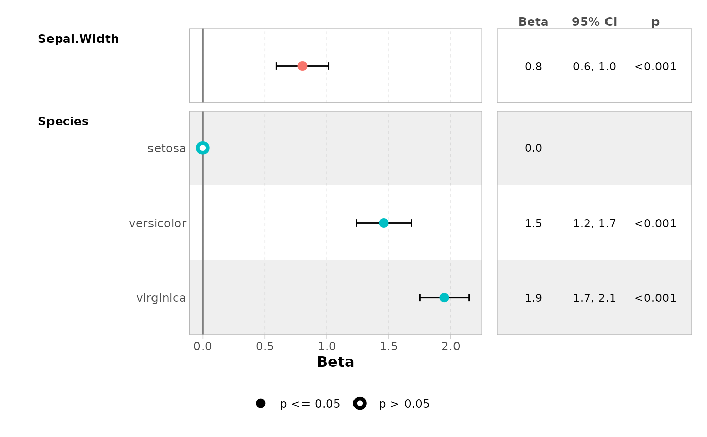
# \donttest{
ggcoef_table(mod, table_stat = c("estimate", "ci"))
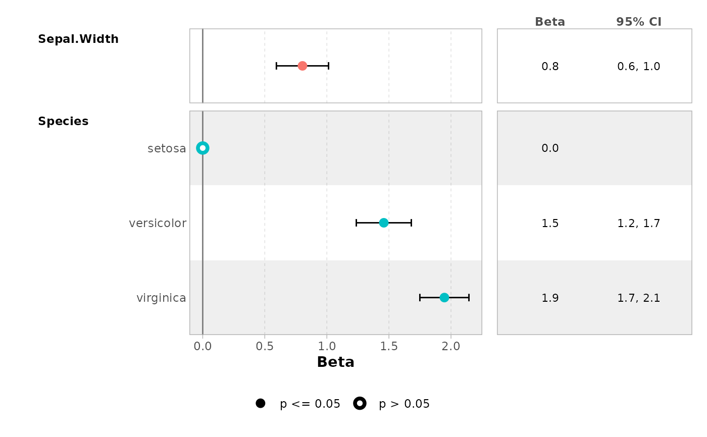
ggcoef_table(
mod,
table_stat_label = list(
estimate = scales::label_number(.001)
)
)
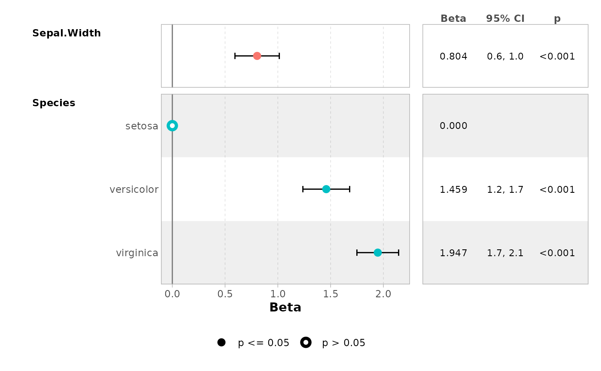
ggcoef_table(mod, table_text_size = 5, table_witdhs = c(1, 1))
# a logistic regression example
d_titanic <- as.data.frame(Titanic)
d_titanic$Survived <- factor(d_titanic$Survived, c("No", "Yes"))
mod_titanic <- glm(
Survived ~ Sex * Age + Class,
weights = Freq,
data = d_titanic,
family = binomial
)
# use 'exponentiate = TRUE' to get the Odds Ratio
ggcoef_model(mod_titanic, exponentiate = TRUE)
ggcoef_table(mod_titanic, exponentiate = TRUE)
# display intercepts
ggcoef_model(mod_titanic, exponentiate = TRUE, intercept = TRUE)
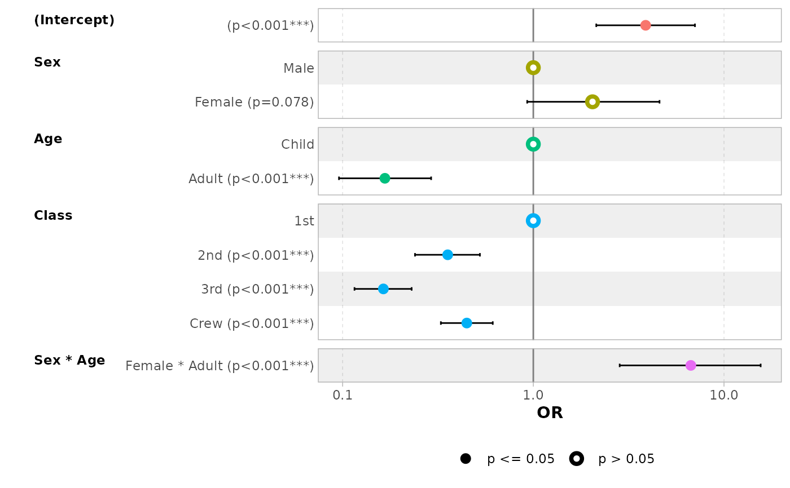
# customize terms labels
ggcoef_model(
mod_titanic,
exponentiate = TRUE,
show_p_values = FALSE,
signif_stars = FALSE,
add_reference_rows = FALSE,
categorical_terms_pattern = "{level} (ref: {reference_level})",
interaction_sep = " x ",
y_labeller = scales::label_wrap(15)
)
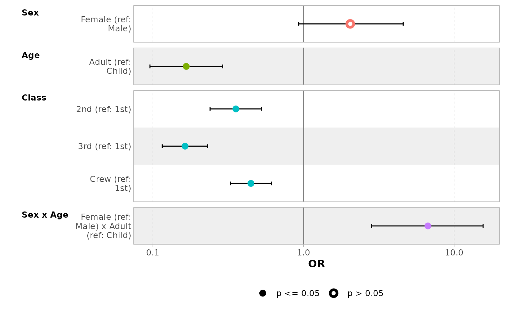
# display only a subset of terms
ggcoef_model(mod_titanic, exponentiate = TRUE, include = c("Age", "Class"))
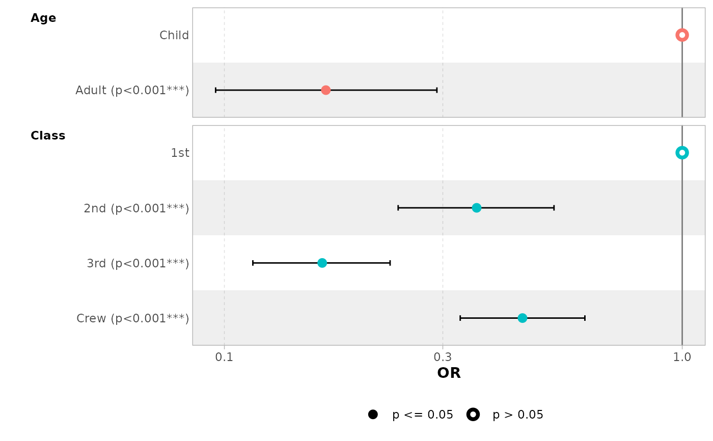
# do not change points' shape based on significance
ggcoef_model(mod_titanic, exponentiate = TRUE, significance = NULL)
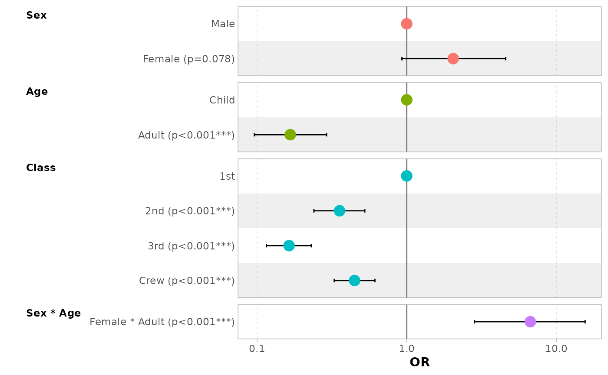
# a black and white version
ggcoef_model(
mod_titanic,
exponentiate = TRUE,
colour = NULL, stripped_rows = FALSE
)
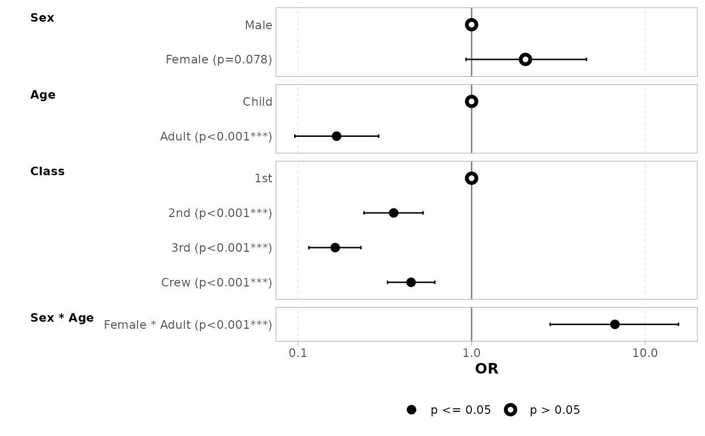
# show dichotomous terms on one row
ggcoef_model(
mod_titanic,
exponentiate = TRUE,
no_reference_row = broom.helpers::all_dichotomous(),
categorical_terms_pattern =
"{ifelse(dichotomous, paste0(level, ' / ', reference_level), level)}",
show_p_values = FALSE
)
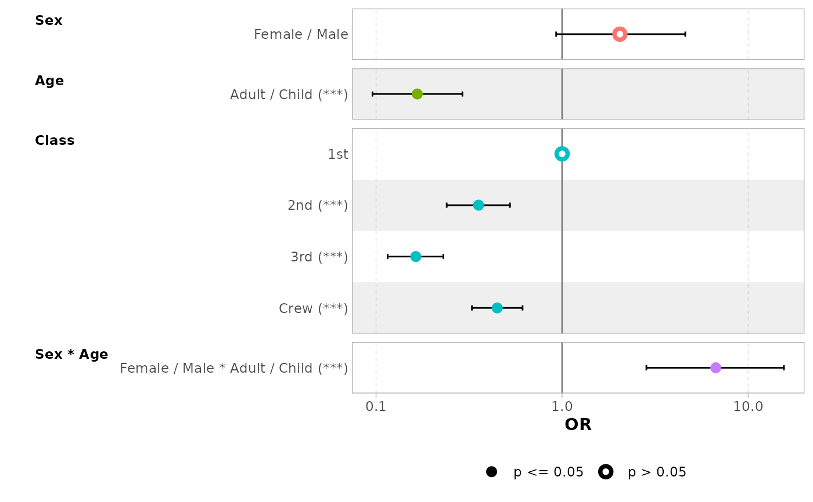
# }
# \donttest{
data(tips, package = "reshape")
mod_simple <- lm(tip ~ day + time + total_bill, data = tips)
ggcoef_model(mod_simple)
# custom variable labels
# you can use the labelled package to define variable labels
# before computing model
if (requireNamespace("labelled")) {
tips_labelled <- tips |>
labelled::set_variable_labels(
day = "Day of the week",
time = "Lunch or Dinner",
total_bill = "Bill's total"
)
mod_labelled <- lm(tip ~ day + time + total_bill, data = tips_labelled)
ggcoef_model(mod_labelled)
}
# you can provide custom variable labels with 'variable_labels'
ggcoef_model(
mod_simple,
variable_labels = c(
day = "Week day",
time = "Time (lunch or dinner ?)",
total_bill = "Total of the bill"
)
)
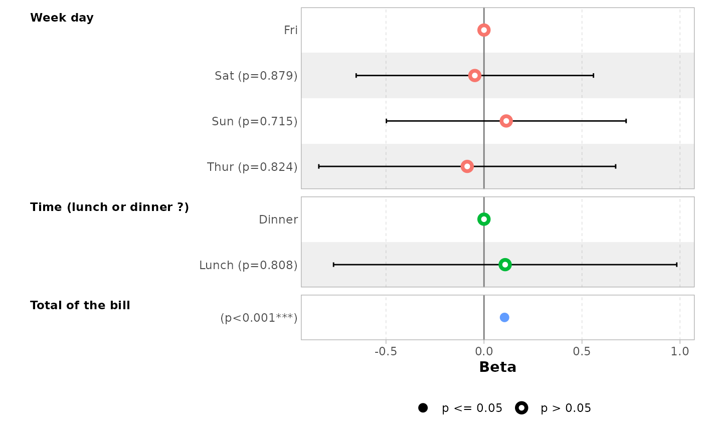
# if labels are too long, you can use 'facet_labeller' to wrap them
ggcoef_model(
mod_simple,
variable_labels = c(
day = "Week day",
time = "Time (lunch or dinner ?)",
total_bill = "Total of the bill"
),
facet_labeller = ggplot2::label_wrap_gen(10)
)
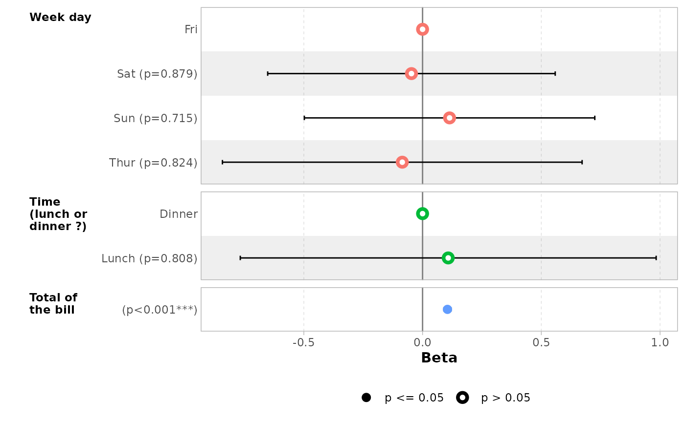
# do not display variable facets but add colour guide
ggcoef_model(mod_simple, facet_row = NULL, colour_guide = TRUE)
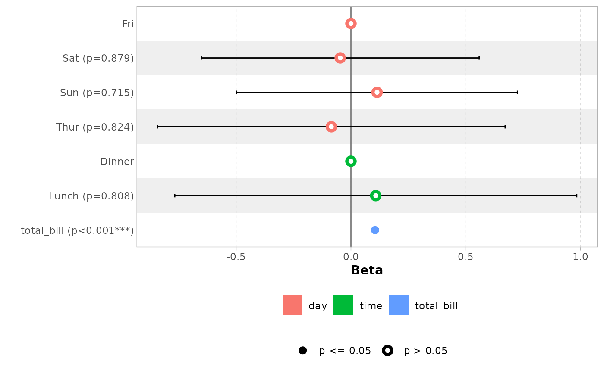
# works also with with polynomial terms
mod_poly <- lm(
tip ~ poly(total_bill, 3) + day,
data = tips,
)
ggcoef_model(mod_poly)
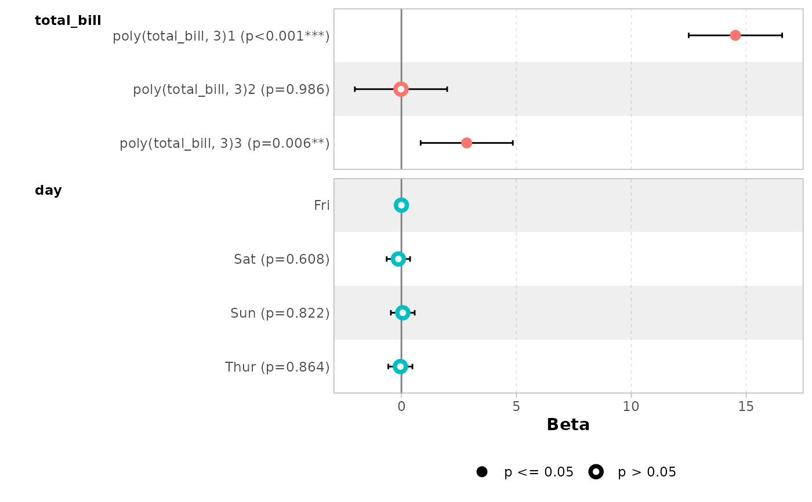
# or with different type of contrasts
# for sum contrasts, the value of the reference term is computed
if (requireNamespace("emmeans")) {
mod2 <- lm(
tip ~ day + time + sex,
data = tips,
contrasts = list(time = contr.sum, day = contr.treatment(4, base = 3))
)
ggcoef_model(mod2)
}
#> Loading required namespace: emmeans
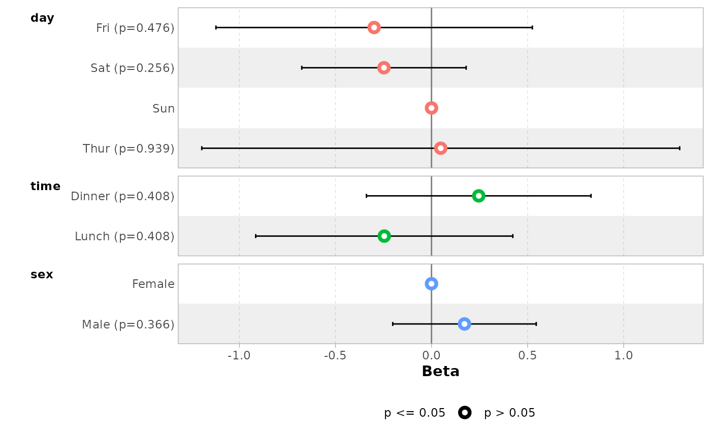
# }
# \donttest{
# Use ggcoef_compare() for comparing several models on the same plot
mod1 <- lm(Fertility ~ ., data = swiss)
mod2 <- step(mod1, trace = 0)
mod3 <- lm(Fertility ~ Agriculture + Education * Catholic, data = swiss)
models <- list(
"Full model" = mod1,
"Simplified model" = mod2,
"With interaction" = mod3
)
ggcoef_compare(models)
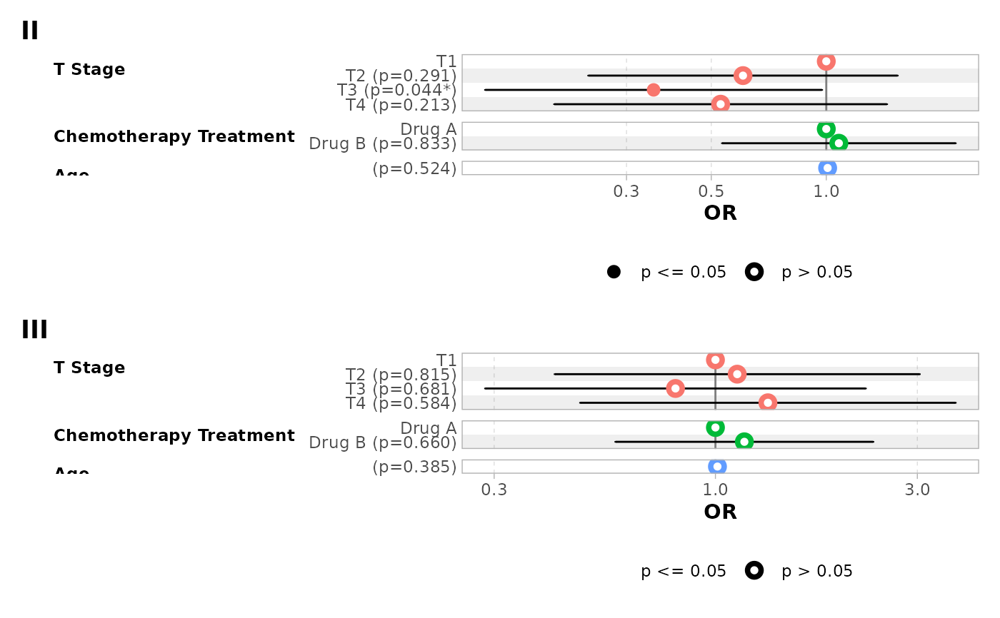
ggcoef_compare(models, type = "faceted")
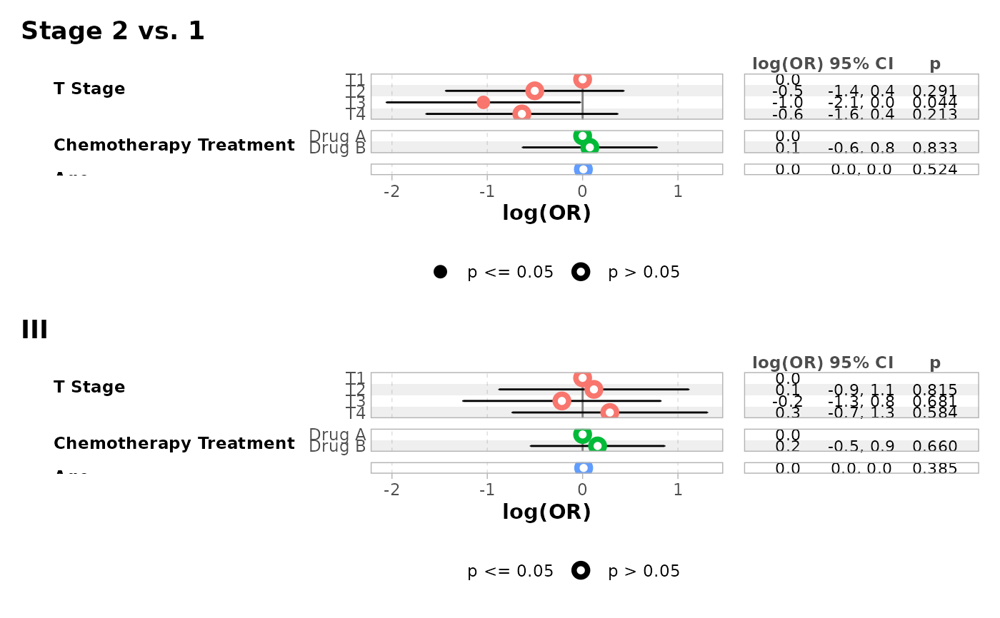
# you can reverse the vertical position of the point by using a negative
# value for dodged_width (but it will produce some warnings)
ggcoef_compare(models, dodged_width = -.9)
#> Warning: `position_dodge()` requires non-overlapping x intervals.
#> Warning: `position_dodge()` requires non-overlapping x intervals.
#> Warning: `position_dodge()` requires non-overlapping x intervals.
#> Warning: `position_dodge()` requires non-overlapping x intervals.
#> Warning: `position_dodge()` requires non-overlapping x intervals.
#> Warning: `position_dodge()` requires non-overlapping x intervals.
 # }
# \donttest{
# specific function for nnet::multinom models
mod <- nnet::multinom(Species ~ ., data = iris)
#> # weights: 18 (10 variable)
#> initial value 164.791843
#> iter 10 value 16.177348
#> iter 20 value 7.111438
#> iter 30 value 6.182999
#> iter 40 value 5.984028
#> iter 50 value 5.961278
#> iter 60 value 5.954900
#> iter 70 value 5.951851
#> iter 80 value 5.950343
#> iter 90 value 5.949904
#> iter 100 value 5.949867
#> final value 5.949867
#> stopped after 100 iterations
ggcoef_multinom(mod, exponentiate = TRUE)
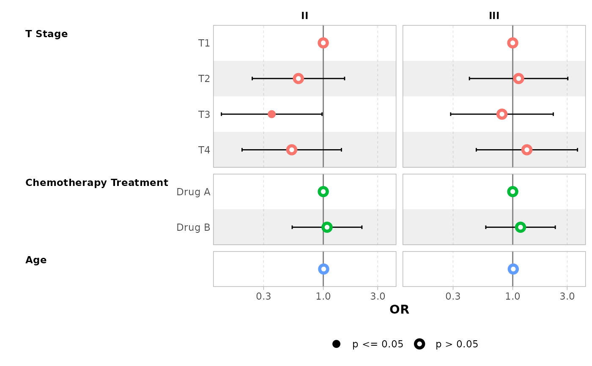
ggcoef_multinom(mod, type = "faceted")
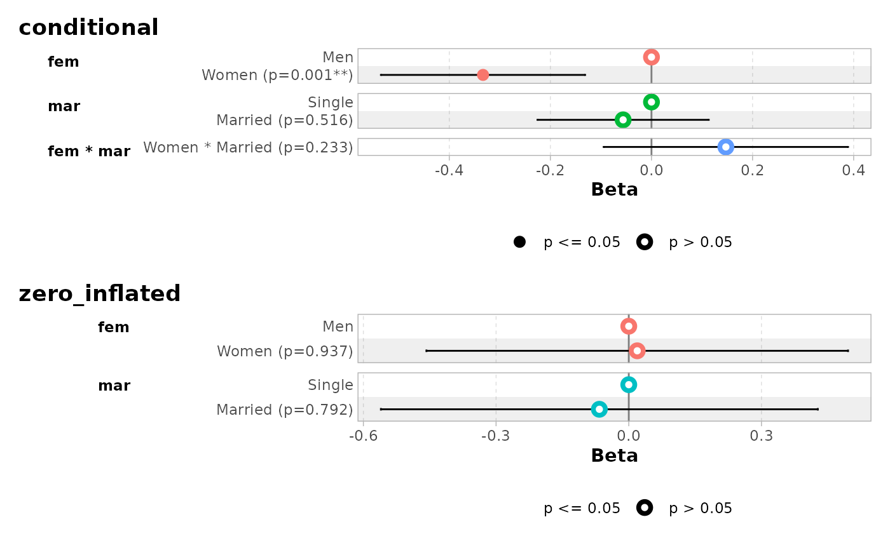
ggcoef_multinom(
mod,
type = "faceted",
y.level_label = c("versicolor" = "versicolor\n(ref: setosa)")
)
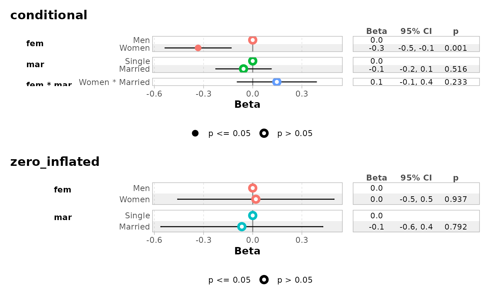
# }
# \donttest{
library(pscl)
#> Classes and Methods for R originally developed in the
#> Political Science Computational Laboratory
#> Department of Political Science
#> Stanford University (2002-2015),
#> by and under the direction of Simon Jackman.
#> hurdle and zeroinfl functions by Achim Zeileis.
data("bioChemists", package = "pscl")
mod <- zeroinfl(art ~ fem * mar | fem + mar, data = bioChemists)
ggcoef_multicomponents(mod)
#> ℹ <zeroinfl> model detected.
#> ✔ `tidy_zeroinfl()` used instead.
#> ℹ Add `tidy_fun = broom.helpers::tidy_zeroinfl` to quiet these messages.
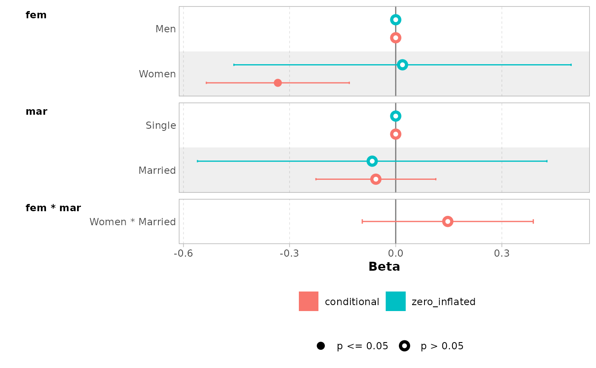
ggcoef_multicomponents(mod, type = "f")
#> ℹ <zeroinfl> model detected.
#> ✔ `tidy_zeroinfl()` used instead.
#> ℹ Add `tidy_fun = broom.helpers::tidy_zeroinfl` to quiet these messages.
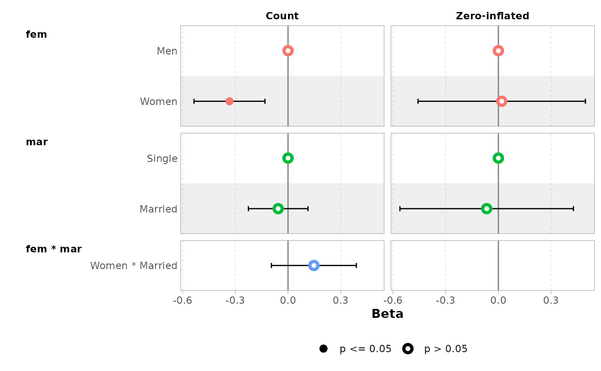
ggcoef_multicomponents(mod, type = "t")
#> ℹ <zeroinfl> model detected.
#> ✔ `tidy_zeroinfl()` used instead.
#> ℹ Add `tidy_fun = broom.helpers::tidy_zeroinfl` to quiet these messages.
ggcoef_multicomponents(
mod,
type = "t",
component_label = c(conditional = "Count", zero_inflated = "Zero-inflated")
)
#> ℹ <zeroinfl> model detected.
#> ✔ `tidy_zeroinfl()` used instead.
#> ℹ Add `tidy_fun = broom.helpers::tidy_zeroinfl` to quiet these messages.
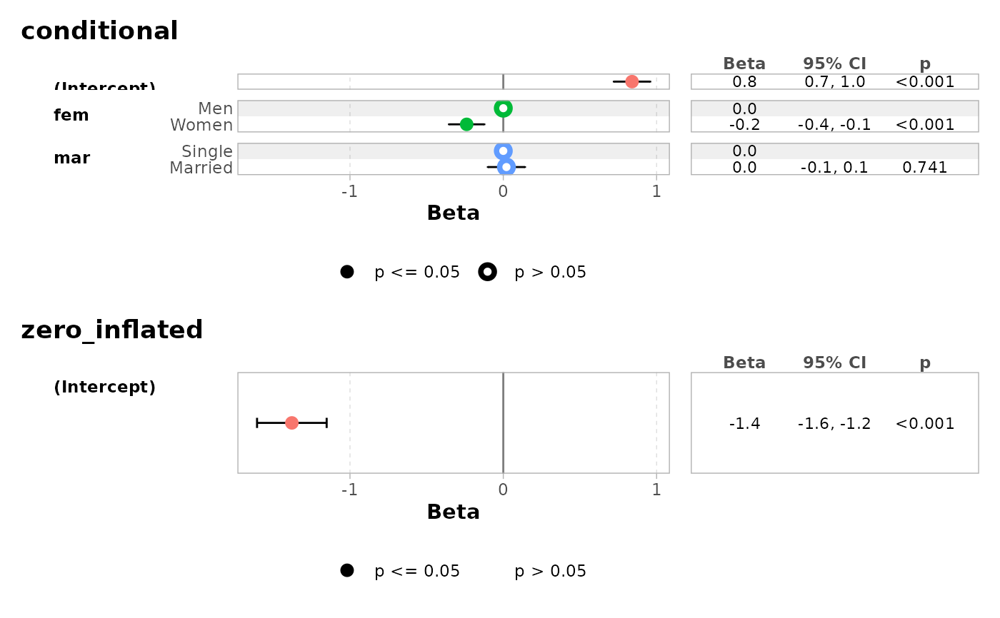
mod2 <- zeroinfl(art ~ fem + mar | 1, data = bioChemists)
ggcoef_multicomponents(mod2, type = "t")
#> ℹ <zeroinfl> model detected.
#> ✔ `tidy_zeroinfl()` used instead.
#> ℹ Add `tidy_fun = broom.helpers::tidy_zeroinfl` to quiet these messages.
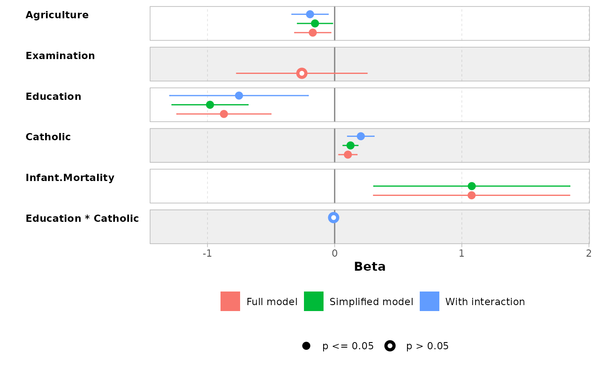
# }
# }
# \donttest{
# specific function for nnet::multinom models
mod <- nnet::multinom(Species ~ ., data = iris)
#> # weights: 18 (10 variable)
#> initial value 164.791843
#> iter 10 value 16.177348
#> iter 20 value 7.111438
#> iter 30 value 6.182999
#> iter 40 value 5.984028
#> iter 50 value 5.961278
#> iter 60 value 5.954900
#> iter 70 value 5.951851
#> iter 80 value 5.950343
#> iter 90 value 5.949904
#> iter 100 value 5.949867
#> final value 5.949867
#> stopped after 100 iterations
ggcoef_multinom(mod, exponentiate = TRUE)
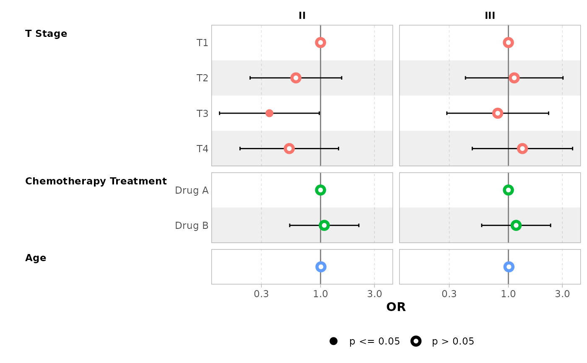
ggcoef_multinom(mod, type = "faceted")
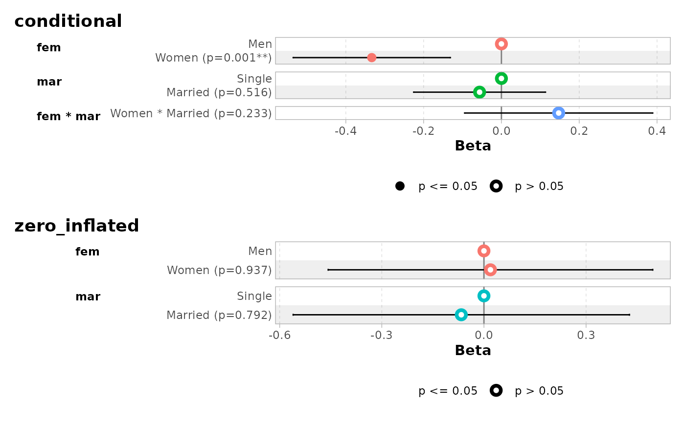
ggcoef_multinom(
mod,
type = "faceted",
y.level_label = c("versicolor" = "versicolor\n(ref: setosa)")
)
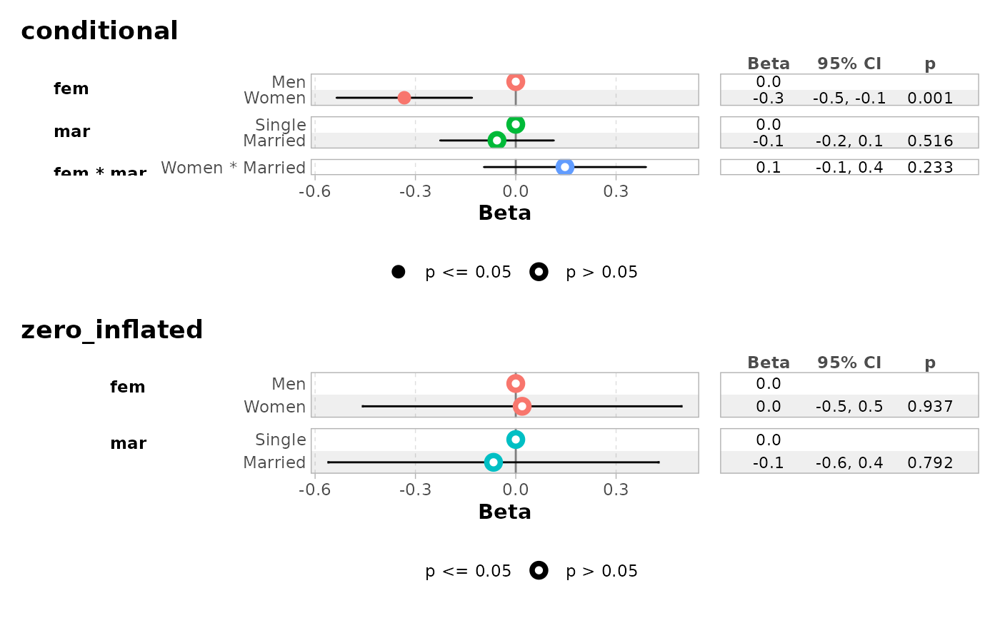
# }
# \donttest{
library(pscl)
#> Classes and Methods for R originally developed in the
#> Political Science Computational Laboratory
#> Department of Political Science
#> Stanford University (2002-2015),
#> by and under the direction of Simon Jackman.
#> hurdle and zeroinfl functions by Achim Zeileis.
data("bioChemists", package = "pscl")
mod <- zeroinfl(art ~ fem * mar | fem + mar, data = bioChemists)
ggcoef_multicomponents(mod)
#> ℹ <zeroinfl> model detected.
#> ✔ `tidy_zeroinfl()` used instead.
#> ℹ Add `tidy_fun = broom.helpers::tidy_zeroinfl` to quiet these messages.
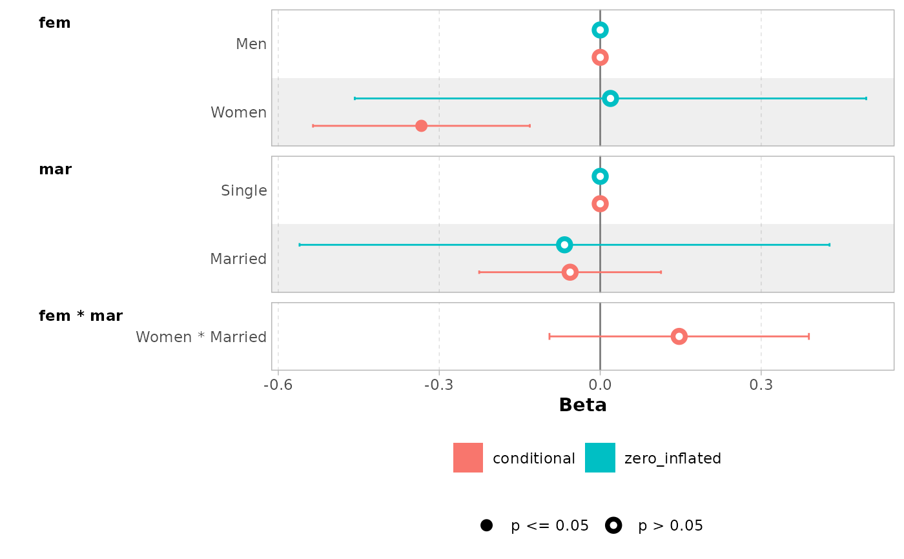
ggcoef_multicomponents(mod, type = "f")
#> ℹ <zeroinfl> model detected.
#> ✔ `tidy_zeroinfl()` used instead.
#> ℹ Add `tidy_fun = broom.helpers::tidy_zeroinfl` to quiet these messages.
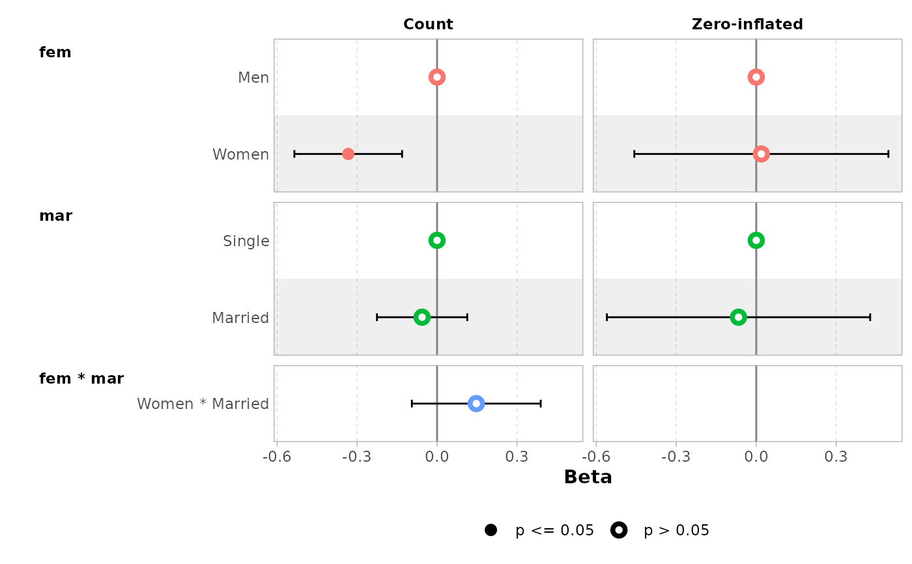
ggcoef_multicomponents(mod, type = "t")
#> ℹ <zeroinfl> model detected.
#> ✔ `tidy_zeroinfl()` used instead.
#> ℹ Add `tidy_fun = broom.helpers::tidy_zeroinfl` to quiet these messages.
ggcoef_multicomponents(
mod,
type = "t",
component_label = c(conditional = "Count", zero_inflated = "Zero-inflated")
)
#> ℹ <zeroinfl> model detected.
#> ✔ `tidy_zeroinfl()` used instead.
#> ℹ Add `tidy_fun = broom.helpers::tidy_zeroinfl` to quiet these messages.
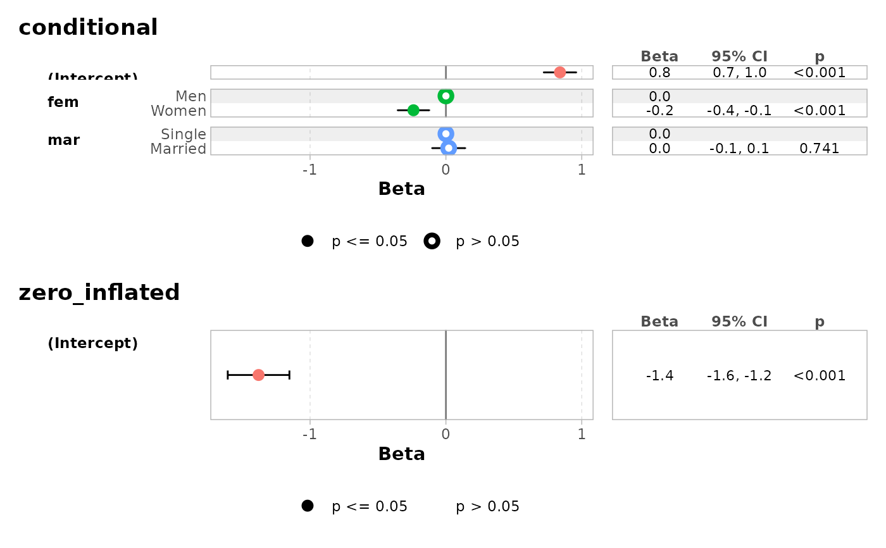
mod2 <- zeroinfl(art ~ fem + mar | 1, data = bioChemists)
ggcoef_multicomponents(mod2, type = "t")
#> ℹ <zeroinfl> model detected.
#> ✔ `tidy_zeroinfl()` used instead.
#> ℹ Add `tidy_fun = broom.helpers::tidy_zeroinfl` to quiet these messages.
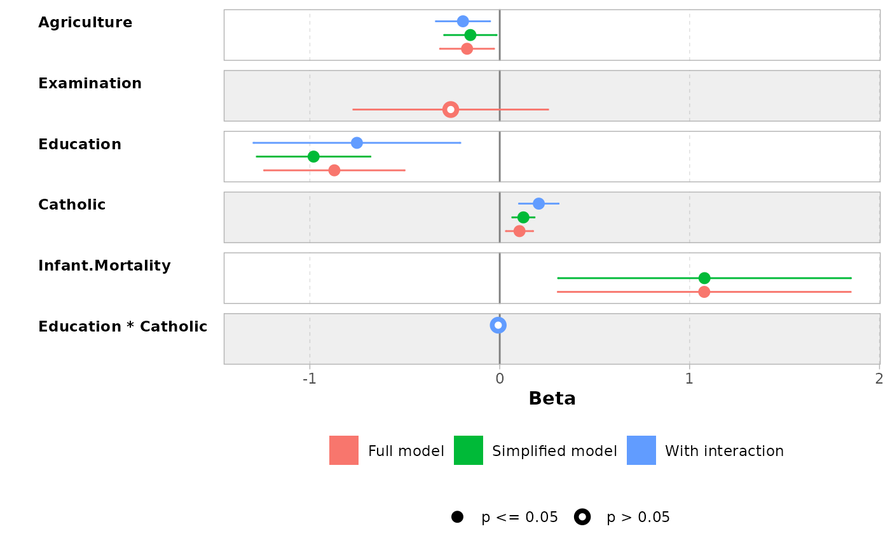
# }